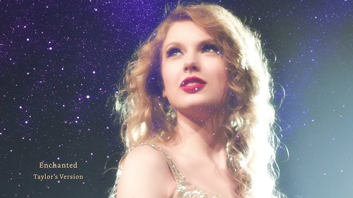
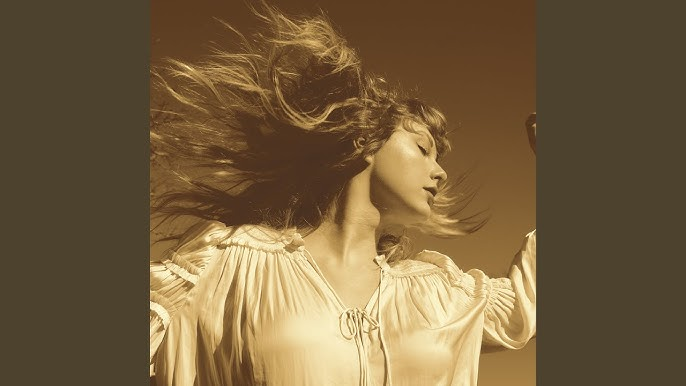
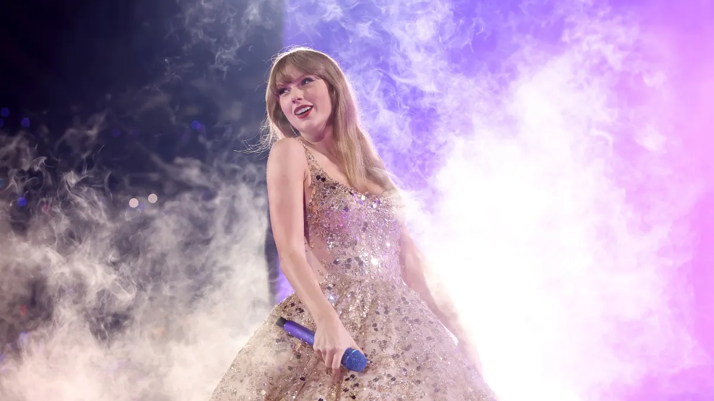
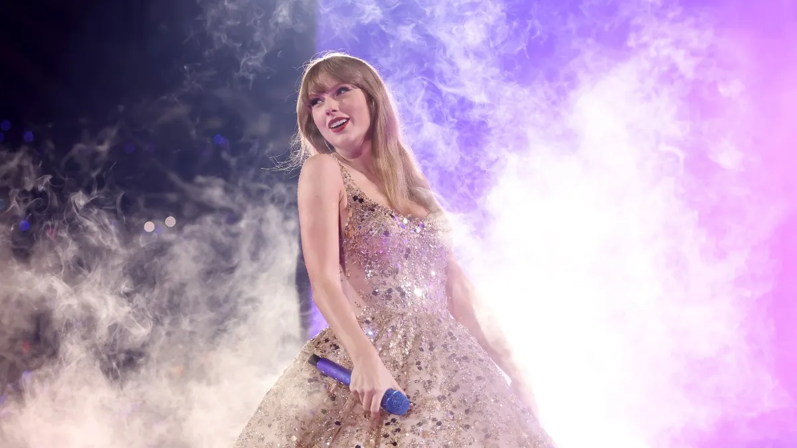

- Enchanted 
- Blank Space
- Love Story 

As a low-key fan, I don't really idolize anyone. But she is still my favourite since young. I really admire her work. She is:
 

Pictures from (left to right): CNN Entertainment, The Star and We Got This Covered.
Taylor Alison Swift is an American singer-songwriter, born on December 13, 1989, in Reading, Pennsylvania. She is a highly influential artist in the music industry, known for her storytelling lyrics and versatility across genres. She began performing as a child and moved to Nashville as a teenager to pursue career in country music.She made her first debut in 2006 with her self-titled debut album, Taylor Swift, which introduced her to the music industry. While her second album, Fearless, gained her international recognition with hits like "Love Story" and "You Belong with Me."
Over the years, Taylor Swift has received multiple awards, including Grammys, for her work and artistry. Her songs have motivated people globally, encouraging self-expression, resilience, and hope. Through her evolving music, record-breaking tours, and connection with fans, she continues to inspire millions around the world.
Want to know more about Taylor Swift? Follow her on social media or visit her official website!